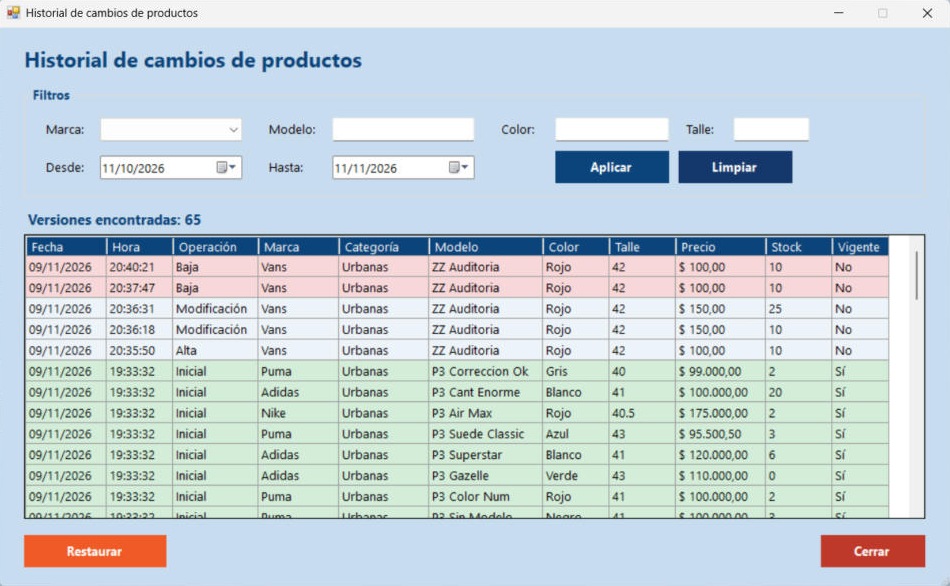

Inicio › Maestro › Historial de cambios de productos
Historial de cambios de productos
Cada vez que un producto se crea, se modifica o se elimina, el sistema guarda una foto de cómo quedó. Acá ves esas versiones, las filtrás y, si te equivocaste, restaurás el producto a cómo estaba en una fecha anterior.
Dónde está: Maestro › Historial de cambios de productosLo usa: AdministradorAtajo: F1
Pasá el mouse por encima de cualquier botón o campo de la pantalla para ver qué hace.

Qué hace cada elemento
- 1MarcaMostrá solo las versiones de una marca.
- 2ModeloEscribí parte del nombre del modelo para acotar la búsqueda.
- 3ColorFiltra por color.
- 4TalleFiltra por talle.
- 5DesdePrimer día del período a consultar. Por defecto propone el último mes.
- 6HastaÚltimo día del período. Por defecto es hoy.
- 7AplicarBusca las versiones que cumplen los filtros.
- 8LimpiarBorra los filtros y vuelve a los valores iniciales (último mes).
- 9Versiones encontradasCuántas versiones muestra la lista con los filtros actuales.
- 10Lista de versionesCada fila es una versión: fecha, hora, operación (Inicial, Alta, Modificación o Baja), los datos del producto en ese momento, y si esa versión es la Vigente. Verde: versión vigente. Rojo: baja. Sin color: versión anterior reemplazada.
- 11RestaurarDeja el producto tal como estaba en la versión elegida, incluido el stock. Pide confirmación y es una acción seria: leé el aviso.
- 12CerrarCierra esta ventana y vuelve a Procesar productos.
Cómo hacerlo
- Elegí marca y/o escribí modelo, color o talle.
- Ajustá Desde y Hasta si el cambio fue hace más de un mes.
- Tocá Aplicar.
- Leé la lista de arriba hacia abajo: lo más nuevo aparece primero.
Sirve, por ejemplo, para recuperar un producto eliminado por error o un precio mal cargado.
- Buscá el producto y tocá la fila de la versión a la que querés volver.
- Tocá Restaurar.
- Leé el aviso completo y confirmá solo si estás seguro.
- El producto queda como estaba en esa versión. Si estaba eliminado, se vuelve a crear.
Tené en cuenta: Restaurar reemplaza TODO el estado actual, también el stock, aunque después haya habido ventas o compras. Puede afectar esas operaciones, y queda bajo tu responsabilidad.
Para saber más
Mensajes que puede mostrar el sistema 8
| Mensaje | Qué significa y qué hacer |
|---|---|
| AvisoLa fecha desde no puede ser posterior a la fecha hasta. | Corregí el rango de fechas. |
| AvisoSeleccione una versión de la grilla para restaurar. | Tocá primero una fila de la lista. |
| AvisoLa versión seleccionada ya es la vigente de este producto. | No hay nada para restaurar: el producto ya está así. |
| ConfirmaciónVa a restaurar el producto ... a la versión del ... Se reemplaza todo el estado actual del producto (incluido el stock)... | Sí restaura, No cancela. Si el producto fue eliminado se vuelve a crear. |
| ErrorNo se puede restaurar: la marca / la categoría de esa versión ya no existe. | Primero volvé a crear esa marca o categoría en Procesar categorías y marcas. |
| ErrorNo se puede restaurar: ya existe otro producto con la misma marca, modelo, color y talle. | No pueden convivir dos productos iguales. Resolvé el que ya existe. |
| ErrorLa versión seleccionada ya no existe. Actualice la lista y vuelva a intentar. | Tocá Aplicar para refrescar la lista. |
| ListoEl producto fue restaurado a la versión seleccionada. | El producto quedó con esos datos y se registró una versión nueva. |
Reglas a tener en cuenta 4
- Solo el Administrador puede ver el historial y restaurar versiones.
- Se guarda una versión cada vez que un producto se da de alta, se modifica o se elimina.
- Los productos que ya existían antes de activar el historial figuran con la operación Inicial.
- El historial no se puede editar ni borrar desde el sistema.
Temas relacionados
SneakRush · Ayuda del sistema · Historial de cambios de productos. Podés abrir esta ayuda desde cualquier pantalla con la tecla F1.